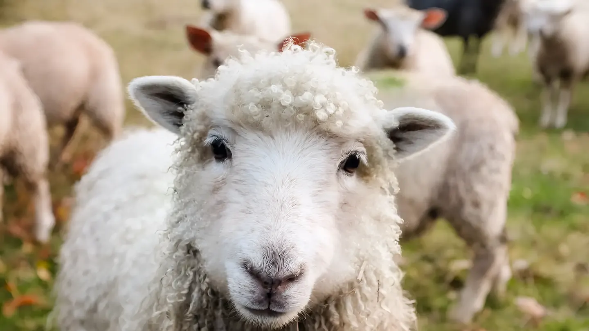
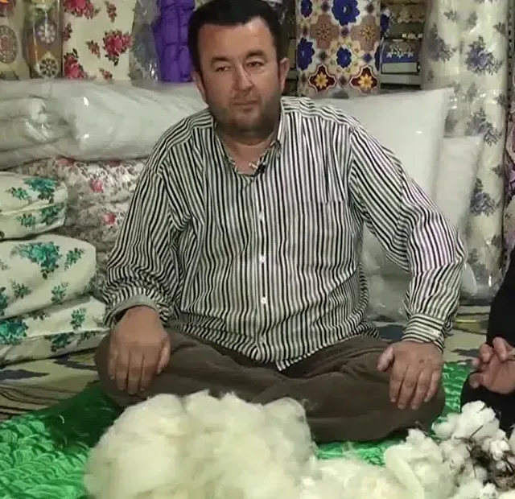

Çeyiz Yorgan Dikim Evi · Korkuteli
Babadan oğula,
iğne iğne.
Ramazan Hoşlar mesleği, küçüklüğünden beri yorgancılık yapan babasının yanında öğrendi. Bugün yorgan, yastık ve döşek Korkuteli'deki dükkânında yün, pamuk, silikon, boncuk silikon ya da elyaftan ölçünüze göre dikiliyor; anneden kalan yorgan yeniden kabarıyor.
“Biz de farklı desenler üreterek canlanması için çalışıyoruz.”Ramazan Hoşlar · Günhaber / DHA, 30 Nisan 2015
Elde dikilir2002'den beri Korkuteli'de
Evden ücretsiz alımKorkuteli içinde her adres
Kartla ödemeDükkânda POS ile kredi / banka kartı
Türkiye'ye kargo5.000 TL üzeri ücretsiz
Her ürünü yün, pamuk ve silikondan ölçünüze göre dikiyoruz
- Yün
- Pamuk
- Silikon
- Boncuk silikon
- Elyaf
- Sünger


En çok sorulanlar
Öne çıkan ürünler

Hikâye
Bir dükkân, iki kuşak, tek zanaat
“Normalde bu meslek de bitiyor, biz de farklı desenler üreterek canlanması için çalışıyoruz.”
Ramazan Hoşlar · Günhaber / DHA, 30 Nisan 2015
Fabrika yorganları çoğaldıkça yorgancı dükkânları birer birer kapandı. Ramazan usta ise müşteri isteğiyle yorganlara isim, logo ve farklı desenler işleyerek zanaatı yaşatıyor.
Hikâyenin devamıMalzeme rehberi
Hangi dolgu size göre?

Yün
En sıcak doğal dolgu. Nemi lifin içine alır; yıkanmaz, yıllarca kabartılarak yenilenir.
Üşüyenler · serin evler
Pamuk
Nefes alır, serin tutar, oturaklıdır. Dolgusu yıkanmaz; kılıfla kullanılır.
Terleyenler · doğal lif sevenler
Silikon
Silikon kaplı polyester elyaf: hafif ve makinede yıkanır. Nefes alması sınırlıdır.
Sık yıkayanlar · çocuklu evler
Elyaf
Ekonomik ve hafif; misafir yatağı için pratik, daha çabuk topaklanır.
Bütçe · misafir odası
Boncuk silikon
Silikonla kaplanmış küçük elyaf topları: kabarık durur, topaklanmaz, makinede yıkanır.
Kabarık ve yıkanabilir isteyenlerGenel karşılaştırmadır; sağlık beyanı değildir.
Tamir & yenileme
Anneden kalan yorgan atılmaz, yenilenir.
Sıkışan yün açılır, kabartılır, eksiği tamamlanır ve yeni yüzle dikilir. Korkuteli içinde her adresten ücretsiz alınır, işlenip teslim edilir; adet şartı yok.
- Yün açılırSıkışan yün atılır, topaklar dağıtılır.
- KabartılırEksilen yün tamamlanır, eşit serilir.
- Yeniden dikilirSaten ya da pamuklu yeni yüz, desen dikişi.
- TeslimDükkândan alın ya da kapınıza gelsin.
Kararsız mısınız?
Doğru yorganı 5 soruda bulun
Üşüyor musunuz, terliyor musunuz, makinede yıkamak mı istiyorsunuz? Cevaplarınıza göre dolgu önerelim; sonucu tek dokunuşla ustaya gönderin.
Yorgan kimin için?
Geceleri nasılsınız?
Nasıl yorgan seversiniz?
Bakımda tercihiniz?
Evde toz akarı alerjisi ya da astım var mı?
Size uygun dolgular
Bu öneri genel bir rehberdir; sağlıkla ilgili bir durumunuz varsa doktorunuzun önerisi önceliklidir.
Ustanın defteri
Yorgan, yastık ve uyku üzerine
Yün yorganda yatmanın faydaları: ne gerçek, ne abartı?
Yün yorgan neden sıcak tutar ama terletmez? Nem, ısı dengesi ve uyku üzerine araştırmalar ne diyor; neyi bilmiyoruz?
Pamuk yastığın faydaları ve kimlere uygun olduğu
Pamuk yastık neden serin tutar, ne kadar dayanır, kimler için doğru seçimdir? Silikon ve yünle dürüst bir karşılaştırma.
Boncuk silikon mu, silikon mu, elyaf mı? Yastık ve yorganda farkları
Üçü de polyester elyaf; farkı lifin biçiminde ve kaplamasında. Hangisi daha kabarık kalır, hangisi topaklanır, hangisi kime uygun?
Gelmeden önce dükkânı görün
Sokak görünümünü parmağınızla çevirin. Dükkânın içinden 360° fotoğraf çok yakında burada.
Dükkân
Buyurun, yünü elinizle görün.
- Adres
- Kiremitli Mah. 836 Sk., Belediye Cd. No:9/F
07800 Korkuteli / Antalya - Telefon
- 0532 726 24 12 · WhatsApp
- Saatler
- Gelmeden önce lütfen arayın.